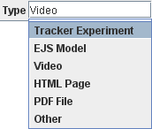

Create your Collection by choosing File|New Collection... or by editing a copy of the "How to Share" Collection to make it your own.
Select the root node of your Collection and enter a Name and Base URL in the appropriate editor fields. The name of the root node is used as the default tab title when the Collection is open in the DL Browser.
Set the relative path to the HTML File for the root node. Since the root node is selected by default when your Collection is opened, the HTML file for the root should tell the user something about the Collection as a whole. Note: you can easily convert between a relative and absolute path by right-clicking the HTML File or Resource field and choosing the Set to absolute or Set relative to base URL item in the popup menu.
Add resource or subcollection nodes using the Add Resource and Add Collection buttons. Enter Names, HTML File and Resource paths as desired. Note: by default, a child node inherits its parent's base URL and displays the URL in light green. You can override this default by entering a different base URL if desired.
For each node, identify the resource type by clicking the Type field and selecting from the dropdown list. The DL Browser will make a good guess when you set a resource path but you should confirm that the type is correct.

To add nodes to a subcollection, select the subcollection node before clicking the Add Resource or Add Collection button. To remove a node, select it and click the Cut Node button.
Reorder nodes by selecting a node and clicking the Move Up or Move Down button. To move a node to a different subcollection, select the node and click the Cut Node button, then select the desired subcollection and click the Paste Node button.